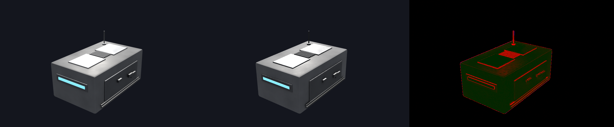
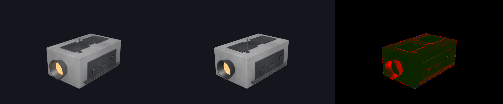
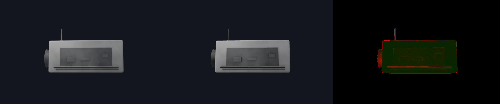
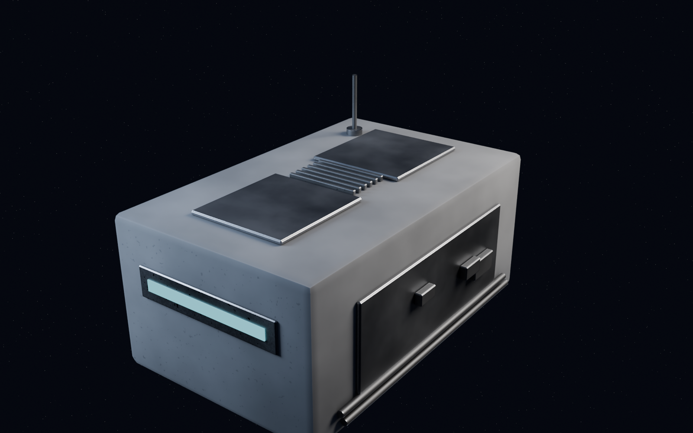
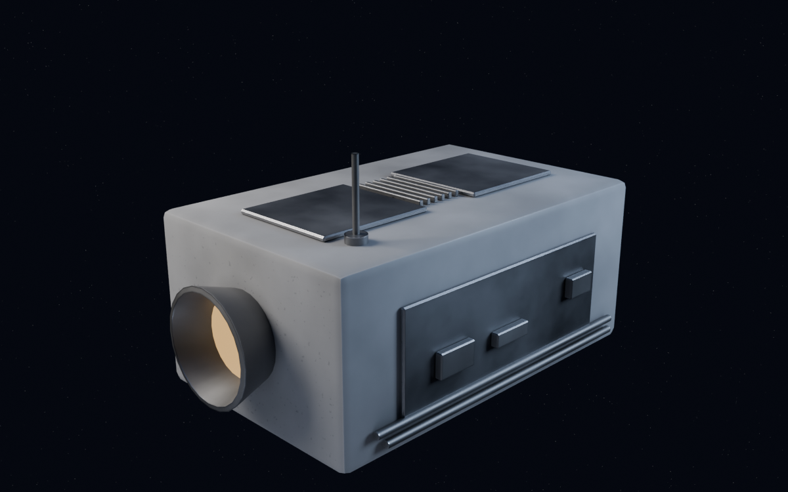
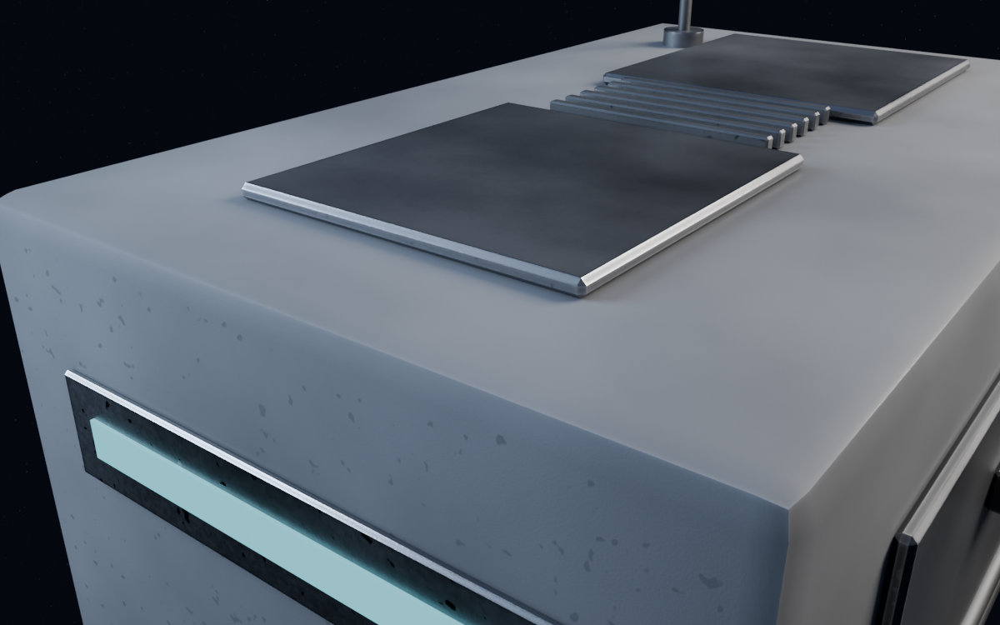
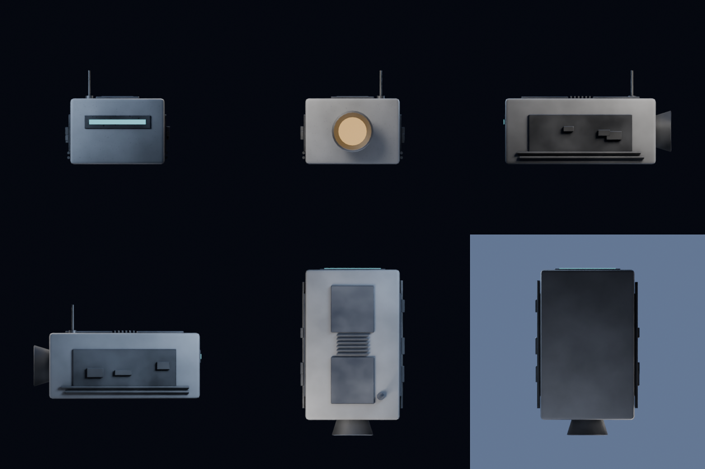
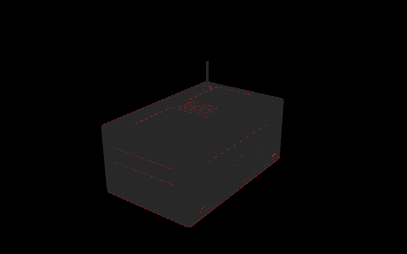
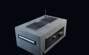

QC raporu — test_box r002
2026-11-15T20:07:24 · fabrika 8343726 · Blender 5.3.0 · Three r128 (oyunun vendor/three.min.js) · tam kalite
Sonuç
WARNgenel karar
65 / 2 / 0 / 2PASS / WARN / FAIL / SKIP
1177 / 540 / 195üçgen LOD0 / LOD1 / LOD2
2draw call (LOD0, Three ölçümü)
272.2 KBGLB boyutu
21.33 MBGPU doku belleği (tahmin)
562 stoplam üretim süresi
Blender ⟷ Three.js (nötr ışık, aynı kamera)



| kamera | parlaklık farkı | ΔE ort. | ΔE p95 | siluet farkı |
|---|---|---|---|---|
| N1_on34 | 4.19% | 2.33 | 11.09 | 0.242% |
| N2_arka34 | 2.32% | 2.69 | 11.33 | 0.223% |
| N3_yan | 1.72% | 1.90 | 7.01 | 0.172% |
Lookdev (Kapı 1 görüntüleri)




Performans (Playwright, swiftshader — yalnızca göreli)
| profil | örnek | ms ort. | p50 | p95 | çağrı | üçgen |
|---|---|---|---|---|---|---|
| masaüstü 1200×750 | 1 | 10.37 | 10.00 | 13.50 | 2 | 1177 |
| masaüstü 1200×750 | 12 | 44.98 | 44.70 | 49.00 | 24 | 14124 |
| masaüstü 1200×750 | 40 | 111.26 | 110.70 | 126.40 | 78 | 47036 |
| iPad Pro 11 landscape | 1 | 11.23 | 11.00 | 13.20 | 2 | 1177 |
| iPad Pro 11 landscape | 12 | 45.93 | 44.80 | 54.50 | 24 | 14124 |
| iPad Pro 11 landscape | 40 | 119.89 | 117.20 | 141.40 | 78 | 47036 |
| iPhone 13 landscape | 1 | 12.54 | 12.30 | 14.70 | 2 | 1177 |
| iPhone 13 landscape | 12 | 47.76 | 46.90 | 56.50 | 24 | 14124 |
| iPhone 13 landscape | 40 | 110.55 | 110.00 | 122.50 | 78 | 47036 |
| Pixel 7 landscape | 1 | 11.10 | 10.50 | 14.00 | 2 | 1177 |
| Pixel 7 landscape | 12 | 52.28 | 50.10 | 68.80 | 24 | 14124 |
| Pixel 7 landscape | 40 | 113.02 | 111.40 | 123.70 | 78 | 47036 |
Yazılım GPU'su mutlak hız vermez; gerçek cihaz ölçümü qc/viewer/bench.html ile yapılır.
Dokular
| doku | boyut | dosya |
|---|---|---|
| sd_test_box_emit | 1024×1024 | 3.7 KB |
| sd_test_box_normal | 1024×1024 | 11.2 KB |
| sd_test_box_orm | 1024×1024 | 99.0 KB |
| sd_test_box_base | 1024×1024 | 37.0 KB |
Testler
| test | katman | değer | sınır | not | |
|---|---|---|---|---|---|
| PASS | contract.root | L2 | ["SD_test_box"] | SD_test_box | |
| PASS | contract.lods | L2 | ["LOD0", "LOD1", "LOD2"] | 3 | |
| PASS | contract.names | L2 | [] | SD_/LODn/LODn_<rol>/SOCK_/COL_/SCR_ | |
| PASS | contract.mesh_roles | L2 | LODn_body|emit|glass | ||
| PASS | contract.sockets | L2 | ["SOCK_engine_0", "SOCK_light_0"] | ["SOCK_engine_"] | |
| PASS | contract.transforms | L2 | [] | mesh/LOD/kök düğümleri birim dönüşümlü | |
| PASS | contract.extras | L2 | tam | ["id", "rev", "family", "class", "length_m", "units", "forward", "up", "bounds_min", "bounds_max", "radius", "tris", … | |
| PASS | geom.length | L2 | 1.781 | 1.78 ±2% | |
| PASS | geom.forward_axis | L2 | 0.835 | motor soketi arkada (+Z) ⇒ burun −Z | |
| PASS | ext.allowed | L2 | ["EXT_texture_webp"] | ["EXT_texture_webp", "KHR_materials_unlit", "KHR_texture_transform", "KHR_mesh_quantization", "EXT_meshopt_compressio… | |
| PASS | mat.count | L2 | 2 | 3 | |
| PASS | mat.names | L2 | ["MAT_body", "MAT_emit"] | MAT_<rol> | |
| PASS | mat.emissive_le_1 | L2 | [[1, 1, 1], [1, 0.6000000238418579, 0.2199999988079071]] | ≤ 1 (r128) | |
| PASS | mat.single_sided | L2 | [false, false] | doubleSided=false | |
| PASS | tex.pow2.sd_test_box_emit | L2 | [1024, 1024] | 2^n kare | |
| PASS | tex.format.sd_test_box_emit | L2 | image/webp | image/webp | |
| PASS | tex.pow2.sd_test_box_normal | L2 | [1024, 1024] | 2^n kare | |
| PASS | tex.format.sd_test_box_normal | L2 | image/webp | image/webp | |
| PASS | tex.pow2.sd_test_box_orm | L2 | [1024, 1024] | 2^n kare | |
| PASS | tex.format.sd_test_box_orm | L2 | image/webp | image/webp | |
| PASS | tex.pow2.sd_test_box_base | L2 | [1024, 1024] | 2^n kare | |
| PASS | tex.format.sd_test_box_base | L2 | image/webp | image/webp | |
| PASS | tex.size | L2 | 1024 | 1024 | |
| PASS | tex.uv_coverage | L2 | 0.5949 | PBR istatistikleri yalnızca bu kapsamdaki tekseller üzerinden | |
| PASS | pbr.base_dielectric | L2 | [126, 178] | [30, 240] | p5–p95 sRGB; kir/aşınma ve sabit emisyon bölgeleri sınır dışına düşebilir (WARN) |
| WARN | pbr.base_metal | L2 | [116, 159] | [120, 250] | p5–p95 sRGB; kir/aşınma ve sabit emisyon bölgeleri sınır dışına düşebilir (WARN) |
| PASS | pbr.metal_binary | L2 | 0 | 0.1 | |
| PASS | pbr.rough_range | L2 | [0.184, 0.647] | p0.5 ≥ 0.04 | alt %0,5 yüzdelik (tek teksellik sıkıştırma artığına duyarsız); min 0.031 |
| PASS | pbr.normal_unit | L2 | [1.0, 1.0] | |n|≈1, z>0 (tangent, +Y) | |
| PASS | budget.tris_lod0 | L2 | 1177 | 12000 | |
| PASS | budget.tris_lod1 | L2 | 540 | 5000 | |
| PASS | budget.tris_lod2 | L2 | 195 | 1500 | |
| PASS | budget.calls_lod0 | L2 | 2 | 3 | |
| PASS | budget.glb_kb | L2 | 272.2 | 1024 | |
| PASS | gltf.validator_errors | L2 | 0 | 0 | Khronos glTF Validator 2.0.0-dev.3.10 |
| WARN | gltf.validator_warnings | L2 | 3 | 0 | MESH_PRIMITIVE_GENERATED_TANGENT_SPACE |
| PASS | geom.zero_area_faces | L2 | 0 | 0 | |
| PASS | geom.loose_verts | L2 | 0 | 0 | |
| PASS | geom.backface_visible | L2 | 0 | 0.005 | 12583 dış ışın; delik + ters normal |
| PASS | uv.overlap | L2 | 0 | 0.01 | unique modda ada çakışması |
| PASS | uv.out_of_bounds | L2 | 0 | 0 | |
| PASS | uv.texel_density | L2 | 258.6 | 256 | px/m medyan; hedef ±30% (WARN ±15%); UV doluluk 59% |
| PASS | repro.geometry_hash | L2 | 4f5b25b31f5b1c1a | 4f5b25b31f5b1c1a | ayrı süreçte yeniden kurulum |
| SKIP | ref.silhouette_iou | L2 | 0.8 | referans çizim yok (test nesnesi) | |
| PASS | mat.emit_area | L2 | 0.0124 | 0.03 | emisyonlu yüzey oranı |
| PASS | three.load | L3 | 51.8 | yükleme ms (swiftshader) | |
| PASS | three.materials | L3 | {"MAT_emit": "MeshStandardMaterial", "MAT_body": "MeshStandardMaterial"} | MeshStandardMaterial, FrontSide | |
| PASS | contract.socket_dir.SOCK_engine_0 | L3 | [0, 0, 1] | [0, 0, 1] | Three r128'de okunan yön (düğüm −Z) ile tarifteki yön arası 0.0° |
| PASS | contract.socket_dir.SOCK_light_0 | L3 | [0, 1, 0] | [0, 1, 0] | Three r128'de okunan yön (düğüm −Z) ile tarifteki yön arası 0.0° |
| PASS | three.calls_lod0 | L3 | 2 | 3 | renderer.info |
| PASS | three.normal_side | L3 | 0 | 0.005 | FrontSide⟷DoubleSide, erozyon sonrası (ham 0.914%) |
| PASS | three.lod1_silhouette | L3 | 0.0018 | 0.03 | nesne ~96 px yükseklikte LOD0 ile maske farkı |
| PASS | three.lod2_silhouette | L3 | 0.0075 | 0.03 | nesne ~40 px yükseklikte LOD0 ile maske farkı |
| PASS | three.fidelity.N1_on34 | L3 | {"lum": 0.0419, "dE": 2.33, "sil": 0.00242} | {"lum": 0.08, "dE": 6.0, "sil": 0.01} | Cycles nötr ⟷ Three r128 |
| PASS | three.fidelity.N2_arka34 | L3 | {"lum": 0.0232, "dE": 2.69, "sil": 0.00223} | {"lum": 0.08, "dE": 6.0, "sil": 0.01} | Cycles nötr ⟷ Three r128 |
| PASS | three.fidelity.N3_yan | L3 | {"lum": 0.0172, "dE": 1.9, "sil": 0.00172} | {"lum": 0.08, "dE": 6.0, "sil": 0.01} | Cycles nötr ⟷ Three r128 |
| PASS | perf.masaüstü 1200×750.n1 | L4 | 10 | 7.3 | ms_p50, temel ölçüme göre +37% (eşik: göreli ve > 1.5 ms) |
| PASS | perf.masaüstü 1200×750.n12 | L4 | 44.7 | 45.4 | ms_p50, temel ölçüme göre -2% (eşik: göreli ve > 1.5 ms) |
| PASS | perf.masaüstü 1200×750.n40 | L4 | 110.7 | 110.1 | ms_p50, temel ölçüme göre +1% (eşik: göreli ve > 1.5 ms) |
| PASS | perf.iPad Pro 11 landscape.n1 | L4 | 11 | 9.3 | ms_p50, temel ölçüme göre +18% (eşik: göreli ve > 1.5 ms) |
| PASS | perf.iPad Pro 11 landscape.n12 | L4 | 44.8 | 43.6 | ms_p50, temel ölçüme göre +3% (eşik: göreli ve > 1.5 ms) |
| PASS | perf.iPad Pro 11 landscape.n40 | L4 | 117.2 | 115 | ms_p50, temel ölçüme göre +2% (eşik: göreli ve > 1.5 ms) |
| PASS | perf.iPhone 13 landscape.n1 | L4 | 12.3 | 10.5 | ms_p50, temel ölçüme göre +17% (eşik: göreli ve > 1.5 ms) |
| PASS | perf.iPhone 13 landscape.n12 | L4 | 46.9 | 49 | ms_p50, temel ölçüme göre -4% (eşik: göreli ve > 1.5 ms) |
| PASS | perf.iPhone 13 landscape.n40 | L4 | 110 | 113 | ms_p50, temel ölçüme göre -3% (eşik: göreli ve > 1.5 ms) |
| PASS | perf.Pixel 7 landscape.n1 | L4 | 10.5 | 10.5 | ms_p50, temel ölçüme göre +0% (eşik: göreli ve > 1.5 ms) |
| PASS | perf.Pixel 7 landscape.n12 | L4 | 50.1 | 50.2 | ms_p50, temel ölçüme göre -0% (eşik: göreli ve > 1.5 ms) |
| PASS | perf.Pixel 7 landscape.n40 | L4 | 111.4 | 116 | ms_p50, temel ölçüme göre -4% (eşik: göreli ve > 1.5 ms) |
| SKIP | perf.device_real | L4 | gerçek cihaz ölçümü bench.html ile elle yapılır |
Süreler
| model | 297.8 s |
| prepare | 176.7 s |
| qc | 43.5 s |
| qc_validator | 0.1 s |
| qc_blender | 0.9 s |
| qc_repro | 0.8 s |
| qc_three | 41.8 s |
Teşhis görüntüleri

